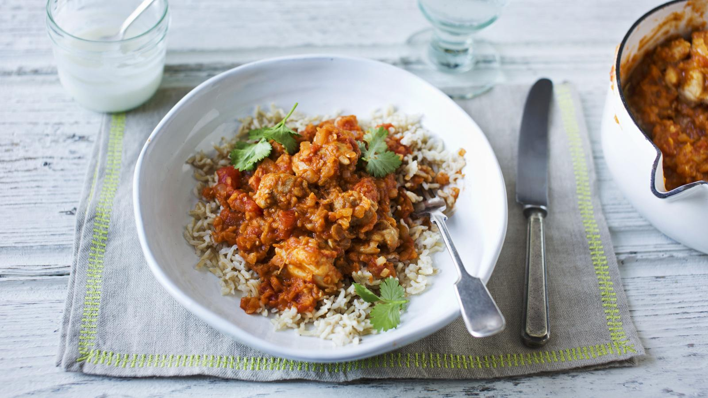

Chicken Dhansak Recipe

Description
Dhansak is a popular Indian dish, originating among the Parsi Zoroastrian community.[1] It combines elements of Persian and Gujarati cuisine. Dhansak is made by cooking mutton or goat meat with a mixture of lentils and vegetables. This is served with caramelised white rice, which is rice cooked in water, whole spices, and caramelized onions.
The dal cooked with mutton and vegetables served with brown rice, altogether is called dhansak.
Ingredients
- low-calorie cooking spra
- 2 onions, finely chopped
- 6-8 chicken thighs, boned, skinned and all visible fat removed
- 2 garlic cloves, crushed
- 20g/¾oz ginger, finely grated
- 2 tsp garam masala
- ½ tsp hot chilli powder
- 400g tin chopped tomatoes
- 600ml/20floz chicken stock, made with 1 chicken stock cube
- 100g/3½oz dried red split lentils, rinsed and drained
- 2 bay leaves (optional)
- 200g/7oz wholegrain long grain rice
- 150g/5½oz fat-free natural yoghurt
- 1 tbsp roughly chopped fresh coriander leaves
Steps
- Spray a wide-based saucepan or sauté pan with oil and place over a medium heat. Cook the onions for five minutes, stirring regularly, until softened and very lightly browned.
- Cut the chicken thighs in half and add to the pan. Cook for two minutes, turning occasionally. Stir in the garlic, ginger, garam masala and chilli powder and cook for a few seconds, stirring constantly.
- Tip the tomatoes into the pan and add the chicken stock, lentils and bay leaves. Bring to the boil, then cover loosely with a lid and simmer gently for 35 minutes, or until the chicken is tender and the lentils have completely broken down, stirring occasionally. Remove the lid for the last 10 minutes of cooking time, stirring regularly so the lentils don’t stick.
- About 25 minutes before the curry is ready, cook the rice in plenty of boiling water until tender, then drain well.
- Season the curry to taste. Serve with the rice, topped with yoghurt and sprinkled with coriander.